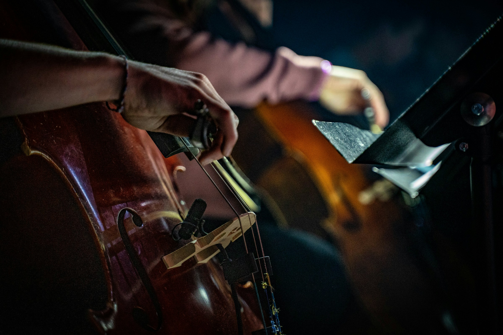

Conhecendo o mundo da música clássica

Fala aí! Hoje eu quero te contar um pouquinho sobre a história da música clássica. Mas calma, nada de ser chato ou técnico demais – vamos bater um papo de boa, como se estivéssemos tomando um café enquanto conversamos sobre Bach, Beethoven e companhia! Bom, pra começar, quando falamos de "música clássica", não estamos falando de um único estilo ou período, né? Na real, é uma jornada que passa por várias fases e cada uma delas tem um clima bem próprio. Bora dar uma olhada nas principais?
Lá no comecinho, lááá no período medieval (imagina os castelos e cavaleiros), a música era bem ligada à igreja. Era tipo um som mais "sério", com aqueles corais gregorianos que você já deve ter ouvido em algum filme. Meio sombrio, mas bonito.
No Renascimento, a coisa começou a ficar mais interessante, com os músicos experimentando mais harmonias e instrumentos novos. Ainda era tudo bem ligado à religião, mas aos poucos a música começou a falar de outras coisas também.
Quando chegamos no período Barroco, é aí que os grandes nomes começam a surgir. Já ouviu falar de Bach? Pois é, ele era O CARA nessa época. O som barroco é bem elaborado, cheio de ornamentos (pensa numa música que fica indo pra lá e pra cá).
Ah, e foi aqui que os concertos e as sonatas começaram a ganhar força – é tipo o momento em que a música instrumental ganhou status. Também tem o Vivaldi, com "As Quatro Estações", e o Handel, famoso pelo seu "Aleluia!" (sabe aquele coral épico?).
Chegamos no clássico, e aqui não tem como não falar de Mozart e Beethoven. Esses dois nomes meio que definem essa fase. O legal é que a música clássica era mais "limpa", sabe? Simples, mas ao mesmo tempo com uma harmonia perfeita.
Mozart foi um gênio – e um cara meio excêntrico também. Dizem que ele começou a compor desde criança e, sério, ele foi um dos compositores mais produtivos de todos os tempos. Beethoven, por outro lado, tinha uma pegada mais emocional. O cara revolucionou! Ele começou no estilo clássico, mas depois foi experimentando até criar um som mais dramático e cheio de emoção. Detalhe: ele compôs algumas das suas melhores obras já surdo!
Se você acha que música pode ser emocional, então o Romantismo é a sua praia. Nessa fase, os compositores queriam colocar a alma em cada nota. A música ficou mais intensa, cheia de paixão, drama, e às vezes um toque de melancolia. Chopin no piano, Tchaikovsky com seus balés (tipo "O Lago dos Cisnes"), e Wagner com suas óperas gigantescas são alguns dos grandes nomes desse período, Era tudo grandioso e, muitas vezes, beeem dramático.
Agora, quando chegamos no século XX, as coisas começam a ficar bem diferentes. Os compositores meio que cansaram das regras antigas e começaram a experimentar novos sons, novas formas de compor, novas maneiras de usar os instrumentos. Surgiu o atonalismo, que pra muitos soa meio esquisito (pensa em música sem aquela "ordem" que estamos acostumados).
Mas nessa época também surgiram nomes como Stravinsky e Schoenberg, que deram uma nova cara à música clássica. Tudo virou uma grande mistura de estilos, e cada compositor tinha sua própria "vibe".
Hoje em dia, a música clássica continua viva, mas claro, tem um espaço mais de nicho. Ainda assim, muitas trilhas sonoras de filmes, séries e até games bebem da fonte clássica. Quem nunca sentiu aquela emoção ao ouvir uma orquestra tocando no fundo de uma cena épica né?
Niccolò Paganini foi um violinista, compositor e guitarrista italiano, amplamente considerado um dos maiores virtuoses da história do violino. Seu domínio técnico revolucionou a forma de tocar violino, introduzindo novas técnicas que desafiavam os limites do instrumento. Paganini era famoso por suas performances intensas e sua habilidade de tocar passagens extremamente rápidas com precisão, o que lhe rendeu a fama de "músico prodígio"
Jean Sibelius foi um compositor finlandês, amplamente reconhecido como um dos mais importantes do século XX. Nascido em 1865, ele é conhecido por suas sinfonias e poemas sinfônicos, que capturam a beleza da natureza e a identidade nacional da Finlândia. Sua obra mais famosa, a "Sinfonia nº 2", reflete um forte espírito de liberdade e resistência. Sibelius também compôs o famoso "Valse Triste" e a "Fantasia" para violino e orquestra. Seu estilo é caracterizado por melodias evocativas e uma rica harmonia, influenciando gerações de compositores. Ele permanece um símbolo da música nacionalista finlandesa.
Antonio Vivaldi foi um compositor, violinista e sacerdote italiano, amplamente reconhecido comoum dos maiores nomes do período barroco. Ele é mais conhecido por suas obras para violino e orquestra, especialmente a coleção "As Quatro Estações", que se tornou uma das peças mais populares e influentes da música clássica. Vivaldi compôs mais de 500 concertos, além deóperas, música sacra e obras corais. Seu estilo é marcado pelo uso inovador do ritmo, da melodia e pela capacidade de evocar emoções profundas.
Ludwig van Beethoven é considerado um dos maiores compositores de todos os tempos. Nascido em Bonn, Alemanha, em 1770, ele revolucionou a música clássica, levando-a do Classicismo ao Romantismo. Sua obra é marcada pela profundidade emocional e inovação estrutural. Entre suas composições mais conhecidas estão as nove sinfonias, especialmente a "Sinfonia nº 9", que inclui o famoso "Ode à Alegria". Apesar de ficar surdo ao longo de sua vida, Beethoven continuou a compor, criando obras-primas que ressoam até hoje.
Wolfgang Amadeus Mozart foi um prodígio musical nascido em Salzburgo, Áustria, em 1756. Com apenas cinco anos, já compunha e se apresentava em palácios europeus. Sua música é celebrada pela beleza melódica e pela complexidade harmônica. Mozart escreveu mais de 600 obras, incluindo sinfonias, concertos, óperas e música de câmara. Entre suas óperas mais famosas estão "As Bodas de Fígaro" e "A Flauta Mágica". Sua vida curta, que terminou em 1791, foi marcada por uma produção musical impressionante e uma influência duradoura na música clássica.
Pyotr Ilyich Tchaikovsky foi um compositor russo, nascido em 1840, conhecido por suas obras emocionais e melodiosas. Ele escreveu sinfonias, concertos, óperas e balés, incluindo "O Lago dos Cisnes", "A Bela Adormecida" e "Quebra-Nozes". Tchaikovsky incorporou elementos do folclore russo em suas composições, tornando-se um dos compositores mais populares do repertório clássico. Sua vida foi marcada por desafios pessoais e um intenso processo criativo, refletindo em suas obras apaixonadas e dramáticas.
Johann Sebastian Bach foi um compositor e organista alemão, nascido em 1685, e é amplamente considerado um dos maiores músicos de todos os tempos. Seu trabalho é fundamental para a música ocidental, caracterizado por complexidade contrapontística e uma profunda espiritualidade. Entre suas obras mais notáveis estão "Os Conertos de Brandemburgo", "A Arte da Fuga" e "O Cravo Bem Temperado". Bach influenciou não apenas seus contemporâneos, mas também gerações de compositores posteriores, estabelecendo as bases da música clássica.
Antonín Dvořák foi um compositor tcheco, nascido em 1841, conhecido por suas sinfonias, concertos e música de câmara que frequentemente incorporam elementos do folclore tcheco. Sua obra mais famosa, a "Sinfonia nº 9" ("Do Novo Mundo"), reflete sua admiração pela cultura americana. Dvořák também escreveu belas peças para violoncelo e orquestra, como o Concerto para Violoncelo em Si Menor. Seu estilo é marcado por melodias cativantes e uma rica harmonia que encanta ouvintes ao redor do mundo.
Max Bruch foi um compositor e maestro alemão, nascido em 1838, mais conhecido por sua contribuição à música romântica. Sua obra mais famosa é o "Concerto para Violino nº 1", que é um favorito no repertório de violino até hoje. Bruch também escreveu várias óperas, sinfonias e música de câmara. Ele era um defensor da música folclórica e incorporou melodias populares em suas composições, criando um estilo acessível e cativante que continua a encantar o público.
Sabia que Mozart, além de ser um compositor genial, tinha uma memória musical fenomenal? Ele era capaz de ouvir uma peça inteira apenas uma vez e reproduzi-la perfeitamente de cabeça! Uma lenda afirma que ele escreveu o "Miserere" de Allegri de memória após ouvi-lo uma única vez na Capela Sistina.
A perda de audição de Beethoven começou ainda jovem, mas isso não o impediu de compor algumas das suas obras mais grandiosas. Ele chegou a cortar as pernas do piano para sentir as vibrações no chão, o que o ajudava a continuar criando suas sinfonias!
Antonio Vivaldi, famoso por suas obras como "As Quatro Estações", era também padre. Ele foi ordenado em 1703 e chegou a ser conhecido como "Il Prete Rosso" (O Padre Ruivo), por causa de sua cor de cabelo. Embora fosse sacerdote, Vivaldi se dedicava mais à música do que à igreja.
O compositor russo Tchaikovsky tinha um medo peculiar: ele acreditava que, ao conduzir uma orquestra, sua cabeça poderia se soltar e cair! Para "resolver" isso, ele costumava segurar seu queixo enquanto regia para garantir que sua cabeça ficasse no lugar.
Quando a obra "A Sagração da Primavera", de Igor Stravinsky, estreou em 1913, ela causou uma verdadeira revolução. A música e a coreografia eram tão inovadoras e diferentes do que o público estava acostumado que a estreia resultou em um tumulto no teatro. Mesmo assim, a obra é hoje considerada um marco da música clássica moderna!
Niccolò Paganini foi um virtuoso violinista italiano que impressionava o público com suas habilidades técnicas. Muitos achavam que ele tinha feito um “pacto com o diabo” por tocar tão rápido e com tamanha maestria. Suas composições e apresentações eram tão intensas que ele foi considerado um dos primeiros "rockstars" da música clássica.
Frederic Chopin, conhecido como o "poeta do piano", compôs várias peças inspiradas em danças polonesas, sendo a polonesa uma de suas formas favoritas. Essas composições expressam o orgulho nacional polonês e têm um caráter vibrante e enérgico, transportando os ouvintes para as terras de sua infância.
Claude Debussy é muitas vezes associado ao movimento impressionista na música, que buscava capturar a sensação e a atmosfera em vez de seguir formas musicais tradicionais. Suas obras, como "Clair de Lune", exploram novas texturas e cores sonoras, proporcionando uma experiência auditiva única que evoca imagens vívidas.